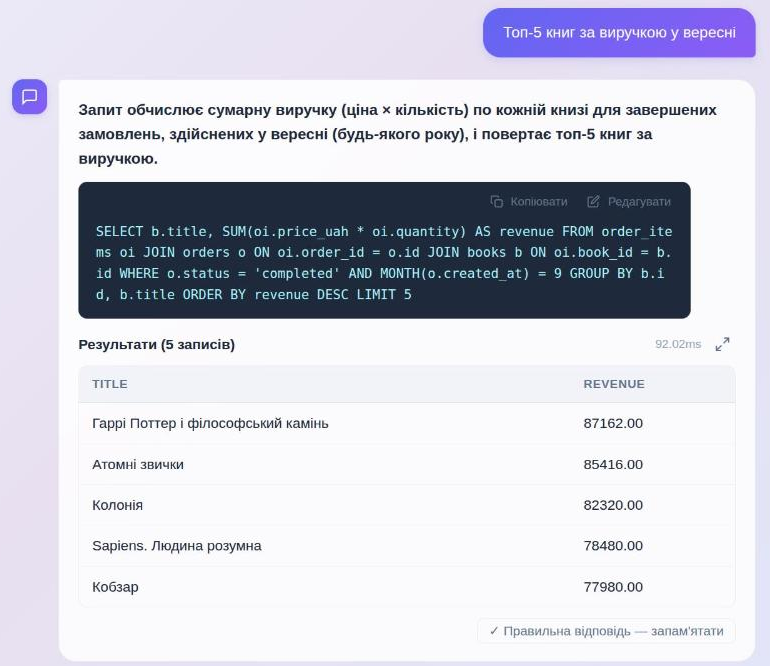
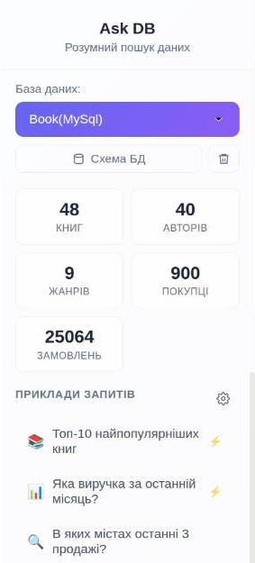
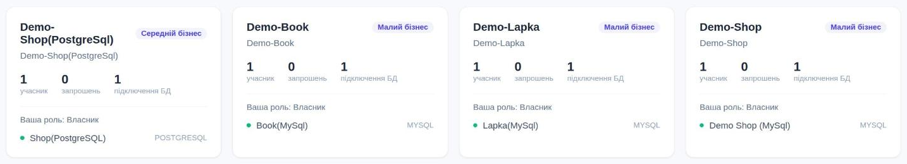
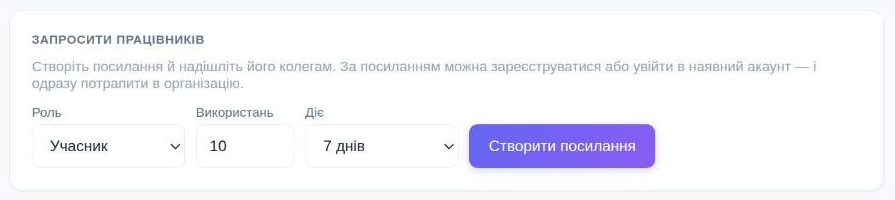

Питайте свою базу
звичайною мовою
Ask DB сам складе SQL-запит, виконає його у вашій базі й покаже таблицю.
Без програміста й без очікування звіту.
ask-db.com.ua
Ask DB сам складе SQL-запит, виконає його у вашій базі й покаже таблицю.
Без програміста й без очікування звіту.
Усе про ваш бізнес уже лежить у базі даних. Але щоб дістати звідти цифру, потрібна людина, яка знає SQL.
Просте питання «скільки, де, коли» стає задачею в черзі програміста чи бухгалтера.
Стандартні форми відповідають на вчорашні питання. Нове питання — нова доробка.
Дати менеджеру пряме підключення — ризик для даних. Тож цифр не отримує ніхто.
Пишете чи кажете питання так, як спитали б колегу. Праворуч — справжня відповідь з проду на демо-базі книгарні.

Спитати голосом замість того, щоб друкувати — зручно з телефона.
Українська, англійська, російська — інтерфейс, пояснення AI, голос і листи.
Правильні відповіді «запам'ятовуються» як зразок, а в нотатках можна пояснити особливості даних.
Часті питання й картки статистики в бічній панелі — один клік, цифри завжди свіжі.
Компанія, запрошення колег за посиланням, спільні підключення. Керують лише власник і адміни.
Кожна відповідь — із SQL і поясненням. Жодної «чорної скриньки».



Зареєструйтесь в Ask DB і вкажіть тип бази. Система видасть персональний токен конектора.
Одна команда на будь-якому комп'ютері чи сервері вашої мережі, звідки видно базу. Є Docker-образ і готові програми для Windows, Linux, macOS.
Конектор підключився — у застосунку загоряється 🟢. Можна ставити перше питання.
Без бази? Завантажте файл Excel або CSV — конектор не потрібен, а дані лишаються у вашому браузері.
Лише один SELECT. Зміни, видалення, зміна структури — відхиляються.
Ті самі правила у вашій мережі. Навіть зламаний сервер не змінить ваші дані.
Підключення до бази відкривається в режимі read-only.
Питають так, як спитали б аналітика. Знати назви таблиць і SQL не потрібно.
Застосунок у продакшені на app.ask-db.com.ua, конектор — публічний образ на Docker Hub.
Вже працює
Далі
тарифу Pro — безкоштовно: до 1000 питань на місяць, голос і команда.
Допомагаємо з підключенням наживо — на вашій базі.
Напишіть — домовимось про 20 хвилин, підключимо вашу базу і спитаємо те, що вам справді цікаво.